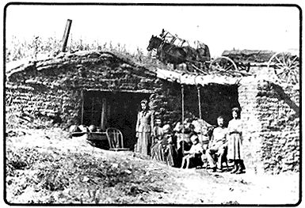

When grandpa came home from the War Between the States, he was 24 and in a hurry to settle down to some worthwhile living. Business was in a severe depression following the war I boom but the federal government had passed the Homestead Act offering free land – with additional concessions to veterans – for those who could "prove up" by living on the land and farming it for a prescribed number of years. Grandpa, with wife and two small babies, was among the first to take advantage of that offer.
The family soon found themselves on the Nebraska frontier with all their household goods packed in a canvas-covered wagon. They had no home and the spindly wild plum thickets and sparce cottonwoods along the few streams were not trees enough for the log cabins they had known back in Ohio and Indiana.
Shelter was the first essential and grandpa and the hundreds of other homesteaders who pioneered with him were resourceful men. They had brought a few farming tools along and first in importance was the heavy iron breaking plow. Drawn by a team of horses or oxen, this instrument could turn up an eighteen inch ribbon of the thick virgin prairie sod. The strip could then be cut into two foot sections, four to six inches deep, to make an almost perfect building block.
The first – and most desirable – homes were simply small rooms dug into the lee side of a low rolling hill. The walls were built up with sod blocks to a height of seven or eight feet. Holes were left for doors and windows which were usually store-bought and hauled from the nearest town or railroad point. Cottonwood poles laid side by side, then spread with a thick layer of coarse prairie grass to provide insulation and prevent dirt from sifting through, formed the roof. Over this was carefully fitted a double layer of the sod building blocks. The first good rain started this sod to growing and soon the dugout roof was covered with waving grass. The grass almost concealed the roof but did not affect its insulating or protective properties.
The floor of the dugout home was of rough wooden planks if the family could afford to buy them. Otherwise, it was treated as the neighboring Indian squaws treated their tipi floors: Sprinkled with water daily and swept with crude grass brooms until the surface was a hard and smooth as finished concrete.
Walls of the sod houses were lined with newspapers pasted or pinned up with small, sharpened sticks to keep the, dirt from brushing off. Some of the more ambitious families located outcroppings of limestone rock which they burned and mixed with screened sand to make a plaster coating for the walls.
The dugouts were amazingly comfortable homes; cool in summer, snug and easily heated in winter. The thick sod walls and roof made excellent insulation in a day when few knew or appreciated the value of insulation. When properly located on the south side of a low hill, with adequate drainage to provide run-off for rain and melting snow, the dugout was probably as comfortable a home as any our pioneering forefathers ever knew.
Unfortunately, the pioneer dugout had a very short life. It couldn't stand prosperity. The fertile Nebraska prairie sod – turned over in the fall and broken down to mellow richness by winter snows, freezing and thawing – produced bumper crops of corn and small grains. With money in the bank, the status symbol was a clap board house and grandma couldn't be satisfied until she had gotten her family out of "that hole in the ground" and into her uninsulated clapboard structure: A house that was stifling hot in the summer and poorly heated in the winter by buffalo chips in the kitchen range or costly storebought coal that had to be hauled from town, carefully hoarded and sparingly doled out.
Prosperity put an end to the dugout in little more than a decade of pioneering, but a few pictures still exist to, show how these homes looked and memories and journals of the oldtimers record the dugout's comforts and advantages . . . advantages that are still available to today's pioneers, homesteaders and freedom folk who want to get away from big city congestion and find a quiet, simple life close to the land.
|
 Sod dugout on South Loup River, Custer County, Nebraska, 1890. Load of sod on wagon to repair roof. |
|
|